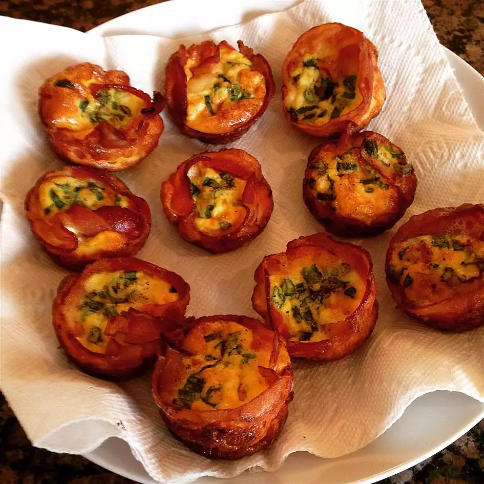

Bacon-and-Egg Muffins

Great brunch item and has many ways to customize this with egg styles and flavors to add.
Nutrition Facts
Per Serving: 134 calories; protein 10.1g; carbohydrates 1.4g; fat 9.7g; cholesterol 170.4mg; sodium 511.8mg.
Ingredients
- cooking spray
- 12 slices bacon
- 10 eggs
- ¼ cup milk
- ¼ cup chopped green onion
- ¼ cup diced jalapeno pepper
- ¼ cup diced roasted red pepper
- 1 teaspoon salt
- 1 teaspoon ground black pepper
- ½ cup shredded Cheddar cheese
Steps
- Preheat oven to 375 degrees F (190 degrees C). Prepare 12 muffin cups with cooking spray.
- Arrange bacon on a microwave-safe plate. Cook bacon in microwave for 75 seconds.
- Place a slice of bacon into each muffin cup so that the bacon lines the edges of the cup.
-
Beat eggs and milk together in a bowl; ladle into muffin cups. Top 4 of the egg portions with 1 tablespoon each of the green onion, 4 with 1
tablespoon each jalapeno pepper, and 4 each with 1 tablespoon roasted red pepper.
-
Bake in preheated oven until only slightly moist on top, about 20 minutes. Season the muffins with salt and pepper; top with Cheddar cheese.
Continue baking until the cheese melts, about 5 minutes more.